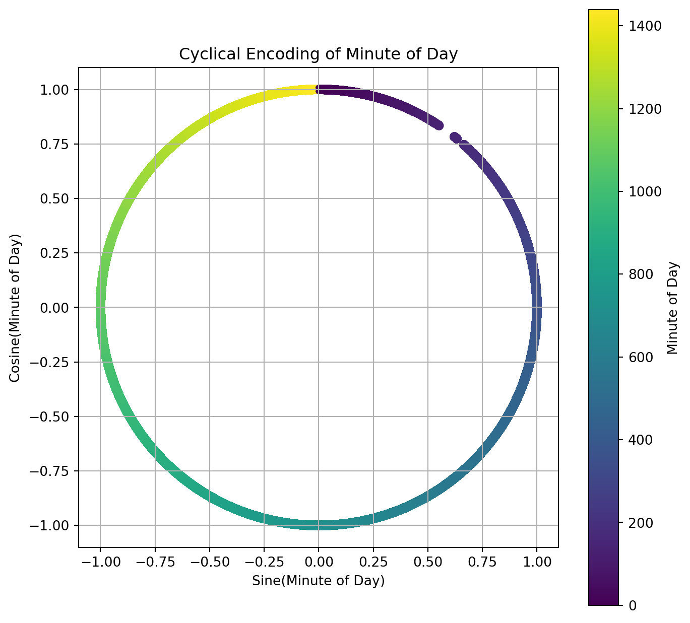
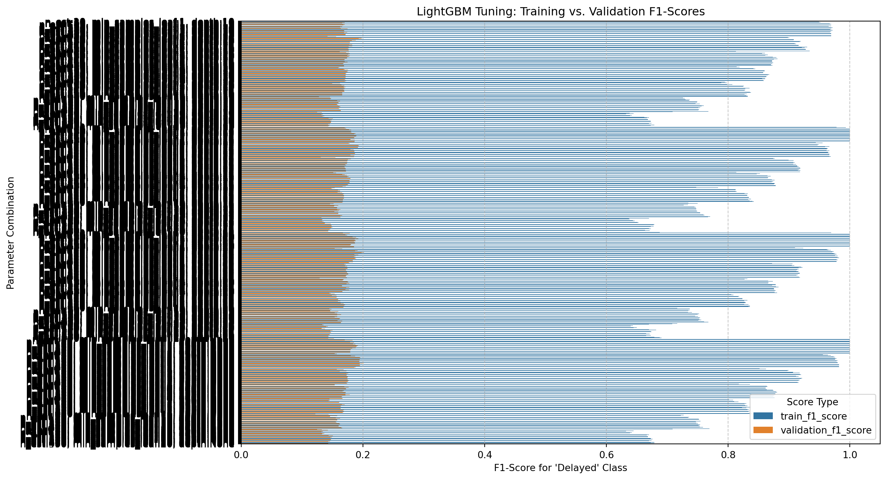
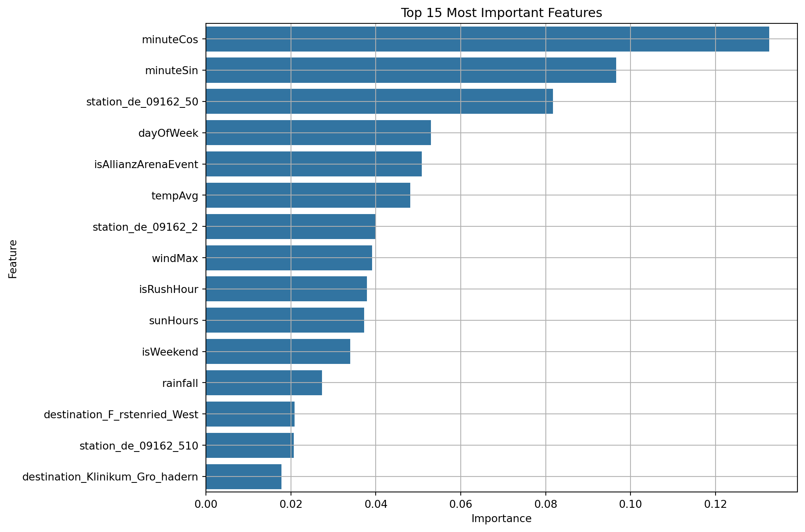
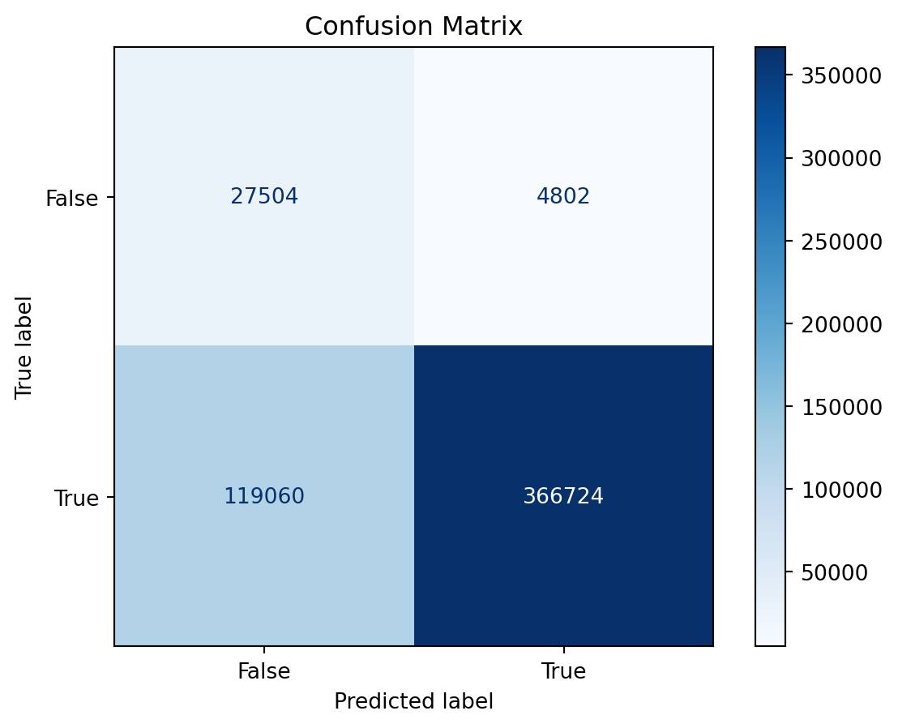

import pandas as pd
import numpy as np
import matplotlib.pyplot as plt
import seaborn as sns
import lightgbm as lgb
import re
from sklearn.model_selection import train_test_split, ParameterGrid
from sklearn.ensemble import RandomForestClassifier
from sklearn.metrics import ConfusionMatrixDisplay, f1_score, classification_report
from joblib import Parallel, delayedDATA_PATH = "../../data/"
MVG_FILE = "subway_only_dedup.parquet"
EVENTS_FILE = "events.csv"
HOLIDAYS_FILE = "public_holiday.csv"
ALLIANZ_FILE = "allianz_arena_events.csv"
WEATHER_FILE = "weather_2024-2025.csv"def load_data(path, mvg_file, events_file, holidays_file, allianz_file, weather_file):
mvg_data = pd.read_parquet(path + mvg_file)
events_df = pd.read_csv(path + events_file, parse_dates=['start_date', 'end_date'])
public_holiday_df = pd.read_csv(path + holidays_file, parse_dates=['date'])
allianz_arena_df = pd.read_csv(path + allianz_file, parse_dates=['date'])
weather_df = pd.read_csv(path + weather_file, parse_dates=['date'])
return mvg_data, events_df, public_holiday_df, allianz_arena_df, weather_df
mvg_data_orig, events_df, public_holiday_df, allianz_arena_df, weather_df = load_data(
DATA_PATH, MVG_FILE, EVENTS_FILE, HOLIDAYS_FILE, ALLIANZ_FILE, WEATHER_FILE
)mvg_data = mvg_data_orig
mvg_data = mvg_data.drop(columns=['transportType', 'realtimeDepartureTime', 'timestamp'])
mvg_data = mvg_data[mvg_data.realtime]
mvg_data['onTime'] = mvg_data['delayInMinutes'] == 0
mvg_datetime = pd.to_datetime(mvg_data['plannedDepartureTime']).dt
mvg_data['plannedDepartureTime_dt'] = pd.to_datetime(mvg_data['plannedDepartureTime'])
#mvg_data['hourOfDay'] = mvg_datetime.hour
mvg_data['minuteOfDay'] = mvg_datetime.hour * 60 + mvg_datetime.minute
# encode minute of day as 23:00 and 00:00 are far apart but close in reality
mvg_data['minuteSin'] = np.sin(2 * np.pi * mvg_data['minuteOfDay'] / 1440)
mvg_data['minuteCos'] = np.cos(2 * np.pi * mvg_data['minuteOfDay'] / 1440)
mvg_data['dayOfWeek'] = mvg_datetime.day_of_week # Monday=0, Sunday=6
#mvg_data['dayOfYear'] = mvg_datetime.day_of_year
mvg_data['isRushHour'] = mvg_datetime.hour.between(7, 9) | mvg_datetime.hour.between(16, 18)
mvg_data['isWeekend'] = mvg_data['dayOfWeek'] >= 5 # Saturday=5, Sunday=6
# remove negative delay for bucketing
mvg_data = mvg_data[mvg_data['delayInMinutes'] >= 0]
# only use u6
mvg_data = mvg_data[mvg_data['label'] == 'U6']
# include events
mvg_data['isMajorEvent'] = False
for index, event in events_df.iterrows():
event_mask = (
(mvg_data['plannedDepartureTime_dt'].dt.date >= event['start_date'].date()) &
(mvg_data['plannedDepartureTime_dt'].dt.date <= event['end_date'].date())
)
mvg_data.loc[event_mask, 'isMajorEvent'] = True
print("\nEvent day departures vs. normal day departures:")
print(mvg_data['isMajorEvent'].value_counts())
# set if public holiday is true
holiday_dates = set(public_holiday_df['date'].dt.date)
mvg_data['isHoliday'] = mvg_data['plannedDepartureTime_dt'].dt.date.isin(holiday_dates)
print("\nHoliday departures vs. normal day departures:")
print(mvg_data['isHoliday'].value_counts())
# include allianz arena events
allianz_arena_dates = set(allianz_arena_df['date'].dt.date)
mvg_data['isAllianzArenaEvent'] = mvg_data['plannedDepartureTime_dt'].dt.date.isin(allianz_arena_dates)
print("\nAllianz Arena Event departures vs. normal day departures:")
print(mvg_data['isAllianzArenaEvent'].value_counts())
#include weather
weather_df['date'] = pd.to_datetime(weather_df['date'], format='%d.%m.%Y')
mvg_data = pd.merge(
mvg_data,
weather_df,
how='left',
left_on=mvg_data['plannedDepartureTime_dt'].dt.date,
right_on=weather_df['date'].dt.date
)
mvg_data = mvg_data.drop(columns=['key_0', 'date'])
nan_weather_rows = mvg_data['tempAvg'].isnull().sum()
if nan_weather_rows > 0:
print(f"Warning: {nan_weather_rows} rows did not have matching weather data and contain NaNs.")
#bins = [float('-inf'), 2, np.inf]
#labels = ['On Time', 'Delayed']
#mvg_data['delayCategory'] = pd.cut(mvg_data['delayInMinutes'], bins=bins, labels=labels)
print("New binary class distribution:\n", mvg_data['onTime'].value_counts())
Event day departures vs. normal day departures:
isMajorEvent
False 3204709
True 249221
Name: count, dtype: int64
Holiday departures vs. normal day departures:
isHoliday
False 3386613
True 67317
Name: count, dtype: int64
Allianz Arena Event departures vs. normal day departures:
isAllianzArenaEvent
False 3153279
True 300651
Name: count, dtype: int64
New binary class distribution:
onTime
True 3239816
False 214114
Name: count, dtype: int64mvg_data.sample(5)| station | plannedDepartureTime | realtime | delayInMinutes | label | destination | onTime | plannedDepartureTime_dt | minuteOfDay | minuteSin | ... | isMajorEvent | isHoliday | isAllianzArenaEvent | tempMin | tempMax | tempAvg | rainfall | sunHours | windMax | snowfall | |
|---|---|---|---|---|---|---|---|---|---|---|---|---|---|---|---|---|---|---|---|---|---|
| 412014 | de:09162:1430 | 2025-08-02 15:30:00+00:00 | True | 0 | U6 | Münchner Freiheit | True | 2025-08-02 15:30:00+00:00 | 930 | -0.793353 | ... | False | False | True | 12.9 | 17.3 | 14.6 | 23.6 | 0.1 | 28.0 | 0 |
| 3337806 | de:09162:540 | 2025-02-27 18:55:00+00:00 | True | 6 | U6 | Goetheplatz | False | 2025-02-27 18:55:00+00:00 | 1135 | -0.971342 | ... | False | False | False | 1.6 | 7.2 | 3.8 | 0.4 | 3.3 | 33.0 | 0 |
| 277398 | de:09162:1340 | 2024-11-19 06:46:00+00:00 | True | 0 | U6 | Klinikum Großhadern | True | 2024-11-19 06:46:00+00:00 | 406 | 0.979925 | ... | False | False | False | 6.5 | 12.5 | 9.8 | 12.9 | 1.0 | 63.0 | 0 |
| 3078564 | de:09184:480 | 2024-03-21 18:34:00+00:00 | True | 0 | U6 | Garching, Forschungszentrum | True | 2024-03-21 18:34:00+00:00 | 1114 | -0.989016 | ... | False | False | False | 7.3 | 14.7 | 10.1 | 5.5 | 2.1 | 49.0 | 0 |
| 2579365 | de:09162:80 | 2025-03-16 07:08:00+00:00 | True | 0 | U6 | Garching, Forschungszentrum | True | 2025-03-16 07:08:00+00:00 | 428 | 0.956305 | ... | False | False | False | 1.6 | 4.4 | 3.2 | 0.3 | 0.0 | 32.0 | 0 |
5 rows × 24 columns
plt.figure(figsize=(8, 8))
scatter = plt.scatter(
mvg_data['minuteSin'],
mvg_data['minuteCos'],
c=mvg_data['minuteOfDay'], # Color points by the original minute of the day
cmap='viridis' # Use a nice color map
)
plt.gca().set_aspect('equal', adjustable='box')
plt.title('Cyclical Encoding of Minute of Day')
plt.xlabel('Sine(Minute of Day)')
plt.ylabel('Cosine(Minute of Day)')
# Add a colorbar to show what the colors mean
cbar = plt.colorbar(scatter)
cbar.set_label('Minute of Day')
plt.grid(True)
plt.show()
mvg_data.sample(5)| station | plannedDepartureTime | realtime | delayInMinutes | label | destination | onTime | plannedDepartureTime_dt | minuteOfDay | minuteSin | ... | isMajorEvent | isHoliday | isAllianzArenaEvent | tempMin | tempMax | tempAvg | rainfall | sunHours | windMax | snowfall | |
|---|---|---|---|---|---|---|---|---|---|---|---|---|---|---|---|---|---|---|---|---|---|
| 1981834 | de:09162:50 | 2024-05-28 17:37:00+00:00 | True | 0 | U6 | Klinikum Großhadern | True | 2024-05-28 17:37:00+00:00 | 1057 | -0.994969 | ... | False | False | False | 10.5 | 16.7 | 13.8 | 0.0 | 3.4 | 33.0 | 0 |
| 3255570 | de:09162:540 | 2024-10-07 17:01:00+00:00 | True | 0 | U6 | Klinikum Großhadern | True | 2024-10-07 17:01:00+00:00 | 1021 | -0.967046 | ... | False | False | False | 9.7 | 23.3 | 15.1 | 0.0 | 8.0 | 22.0 | 0 |
| 470431 | de:09162:1470 | 2025-03-29 23:12:00+00:00 | True | 0 | U6 | Fürstenried West | True | 2025-03-29 23:12:00+00:00 | 1392 | -0.207912 | ... | False | False | True | 6.1 | 9.2 | 7.7 | 4.0 | 0.0 | 32.0 | 0 |
| 973839 | de:09162:1130 | 2024-02-27 08:36:00+00:00 | True | 0 | U6 | Garching, Forschungszentrum | True | 2024-02-27 08:36:00+00:00 | 516 | 0.777146 | ... | False | False | False | 3.0 | 8.0 | 5.3 | 0.0 | 1.1 | 20.0 | 0 |
| 1494489 | de:09162:420 | 2024-10-16 14:19:00+00:00 | True | 0 | U6 | Klinikum Großhadern | True | 2024-10-16 14:19:00+00:00 | 859 | -0.569997 | ... | False | False | False | 9.2 | 17.2 | 12.3 | 0.0 | 2.7 | 29.0 | 0 |
5 rows × 24 columns
features = mvg_data.drop(['delayInMinutes', 'onTime', 'plannedDepartureTime', 'plannedDepartureTime_dt', 'realtime', 'minuteOfDay', 'onTime', 'tempMax', 'tempMin'], axis=1)
target = mvg_data['onTime']
features_encoded = pd.get_dummies(features, columns=['station', 'label', 'destination'])
features_encoded.columns = [re.sub(r'[^A-Za-z0-9_]+', '_', col) for col in features_encoded.columns]
print(f"Columns after sanitization: {features_encoded.shape[1]}")
features_encoded = features_encoded.loc[:, ~features_encoded.columns.duplicated()]
print(f"Columns after removing duplicates: {features_encoded.shape[1]}")
print(f"Total rows in the full dataset: {len(features_encoded)}")
X_sample, _, y_sample, _ = train_test_split(features_encoded, target, train_size=5_000, random_state=0, stratify=target)
X_train_sample, X_test_sample, y_train_sample, y_test_sample = train_test_split(X_sample, y_sample, test_size=0.3, random_state=0)
X_val_sample, X_test_sample, y_val_sample, y_test_sample = train_test_split(X_test_sample, y_test_sample, test_size=0.5, random_state=0)
print(f"\nSampled training set size: {len(X_train_sample)}")
print(f"Sampled validation set size: {len(X_val_sample)}")
print(f"Sampled test set size: {len(X_test_sample)}")
X_train_full, X_test_full, y_train_full, y_test_full = train_test_split(features_encoded, target, test_size=0.3, random_state=0)
X_val_full, X_test_full, y_val_full, y_test_full = train_test_split(X_test_full, y_test_full, test_size=0.5, random_state=0)
print(f"\nFull training set size: {len(X_train_full)}")
print(f"Full validation set size: {len(X_val_full)}")
print(f"Full test set size: {len(X_test_full)}")
train_data_full = pd.concat([X_train_full, y_train_full], axis=1)
target_column_name = y_train_full.name
ontime_samples = train_data_full[train_data_full[target_column_name]]
delay_samples = train_data_full[~train_data_full[target_column_name]]
ontime_downsampled = ontime_samples.sample(n=len(delay_samples), random_state=0)
train_data_balanced = pd.concat([ontime_downsampled, delay_samples])
X_train_balanced = train_data_balanced.drop(columns=[target_column_name])
y_train_balanced = train_data_balanced[target_column_name]
print("\nOriginal full training class distribution:")
print(y_train_full.value_counts())
print("\nBalanced training class distribution:")
print(y_train_balanced.value_counts())Columns after sanitization: 73
Columns after removing duplicates: 72
Total rows in the full dataset: 3453930
Sampled training set size: 3500
Sampled validation set size: 750
Sampled test set size: 750
Full training set size: 2417751
Full validation set size: 518089
Full test set size: 518090
Original full training class distribution:
onTime
True 2268021
False 149730
Name: count, dtype: int64
Balanced training class distribution:
onTime
True 149730
False 149730
Name: count, dtype: int64def train_and_evaluate_rf(params, X_train, y_train, X_val, y_val):
"""Trains a Random Forest and returns both train and validation F1-scores."""
model = RandomForestClassifier(
**params,
n_jobs=-1,
random_state=0
)
#model = lgb.LGBMClassifier(
# random_state=0,
# n_jobs=-1,
# **params
#)
model.fit(X_train, y_train)
val_pred = model.predict(X_val)
train_pred = model.predict(X_train)
# Calculate F1-score specifically for the 'Delayed' class (which is 'False')
# This is the metric we want to maximize to improve precision
train_f1 = f1_score(y_train, train_pred, pos_label=False)
# Calculate F1-score specifically for the 'Delayed' class (which is 'False')
# This is the metric we want to maximize to improve precision
val_f1 = f1_score(y_val, val_pred, pos_label=False)
return params, train_f1, val_f1train_data_sample = pd.concat([X_train_sample, y_train_sample], axis=1)
target_column_name_sample = y_train_sample.name
ontime_samples_s = train_data_sample[train_data_sample[target_column_name_sample]]
delay_samples_s = train_data_sample[~train_data_sample[target_column_name_sample]]
ontime_downsampled_s = ontime_samples_s.sample(n=len(delay_samples_s), random_state=0)
train_data_balanced_s = pd.concat([ontime_downsampled_s, delay_samples_s])
X_train_sample_balanced = train_data_balanced_s.drop(columns=[target_column_name_sample])
y_train_sample_balanced = train_data_balanced_s[target_column_name_sample]
#estimators_to_test = range(10, 501, 10)
param_grid_definition = {
'n_estimators': range(10, 501, 10),
'min_samples_leaf': [1, 2, 3, 4, 5, 10, 20],
'max_depth': [10, 15, 20, None],
}
params_to_test = list(ParameterGrid(param_grid_definition))
print(f"Generated {len(params_to_test)} parameter combinations to test.")
print("First 3 combinations:")
print(params_to_test[:3])
results = Parallel(n_jobs=-1)(
delayed(train_and_evaluate_rf)(
params,
X_train_sample_balanced,
y_train_sample_balanced,
X_val_sample,
y_val_sample
) for params in params_to_test
)
results_df = pd.DataFrame(results, columns=['params', 'train_f1_score', 'validation_f1_score'])Generated 1400 parameter combinations to test.
First 3 combinations:
[{'max_depth': 10, 'min_samples_leaf': 1, 'n_estimators': 10}, {'max_depth': 10, 'min_samples_leaf': 1, 'n_estimators': 20}, {'max_depth': 10, 'min_samples_leaf': 1, 'n_estimators': 30}]best_params, _, best_val_f1_score = max(results, key=lambda item: item[2])
print("\n--- Hyperparameter Tuning Complete ---")
print(f"Best Validation F1-Score (for 'Delayed' class): {best_val_f1_score:.4f}")
print("Best Parameters Found:")
print(best_params)
def format_params(p_dict):
return (f"n_est:{p_dict.get('n_estimators', 'N/A')}, "
f"min_samples_leaf:{p_dict.get('min_samples_leaf', 'N/A')}, "
f"depth:{p_dict.get('max_depth', 'N/A')}")
results_df['param_label'] = results_df['params'].apply(format_params)
df_melted = results_df.melt(
id_vars='param_label',
value_vars=['train_f1_score', 'validation_f1_score'],
var_name='score_type',
value_name='f1_score'
)
plt.figure(figsize=(12, 8))
sns.barplot(x='f1_score', y='param_label', hue='score_type', data=df_melted, orient='h')
plt.title('LightGBM Tuning: Training vs. Validation F1-Scores')
plt.xlabel("F1-Score for 'Delayed' Class")
plt.ylabel("Parameter Combination")
plt.legend(title='Score Type')
plt.grid(axis='x', linestyle='--', alpha=0.7)
plt.show()
--- Hyperparameter Tuning Complete ---
Best Validation F1-Score (for 'Delayed' class): 0.2018
Best Parameters Found:
{'max_depth': 20, 'min_samples_leaf': 2, 'n_estimators': 160}
#best_parameter = max(validation_results, key=validation_results.get)
#
#best_accuracy = validation_results[best_parameter]
#
#print(f"The best parameter is: {best_parameter}")
#print(f"With a validation accuracy of: {best_accuracy:.4f}")final_model = RandomForestClassifier(
**best_params,
n_jobs=-1,
verbose=1,
random_state=0
)
#final_model = lgb.LGBMClassifier(
# **best_params,
# n_jobs=-1,
# verbose=-1,
# random_state=0
#)
print(f"Training final model on {len(X_train_balanced)} samples...")
final_model.fit(X_train_balanced, y_train_balanced)Training final model on 299460 samples...[Parallel(n_jobs=-1)]: Using backend ThreadingBackend with 16 concurrent workers.
[Parallel(n_jobs=-1)]: Done 18 tasks | elapsed: 1.0s
[Parallel(n_jobs=-1)]: Done 160 out of 160 | elapsed: 5.1s finishedRandomForestClassifier(max_depth=20, min_samples_leaf=2, n_estimators=160,
n_jobs=-1, random_state=0, verbose=1)In a Jupyter environment, please rerun this cell to show the HTML representation or trust the notebook. On GitHub, the HTML representation is unable to render, please try loading this page with nbviewer.org.
Parameters
| n_estimators | 160 | |
| criterion | 'gini' | |
| max_depth | 20 | |
| min_samples_split | 2 | |
| min_samples_leaf | 2 | |
| min_weight_fraction_leaf | 0.0 | |
| max_features | 'sqrt' | |
| max_leaf_nodes | None | |
| min_impurity_decrease | 0.0 | |
| bootstrap | True | |
| oob_score | False | |
| n_jobs | -1 | |
| random_state | 0 | |
| verbose | 1 | |
| warm_start | False | |
| class_weight | None | |
| ccp_alpha | 0.0 | |
| max_samples | None | |
| monotonic_cst | None |
importances = final_model.feature_importances_
feature_names = X_train_full.columns
feature_importance_df = pd.DataFrame({'feature': feature_names, 'importance': importances})
feature_importance_df = feature_importance_df.sort_values(by='importance', ascending=False).head(15)
plt.figure(figsize=(10, 8))
sns.barplot(x='importance', y='feature', data=feature_importance_df)
plt.title('Top 15 Most Important Features')
plt.xlabel('Importance')
plt.ylabel('Feature')
plt.grid(True)
plt.show()
y_pred = final_model.predict(X_test_full)
print("Classification Report:")
print(classification_report(y_test_full, y_pred))
disp = ConfusionMatrixDisplay.from_estimator(
final_model,
X_test_full,
y_test_full,
cmap=plt.cm.Blues
)
disp.ax_.set_title('Confusion Matrix')
plt.show()[Parallel(n_jobs=16)]: Using backend ThreadingBackend with 16 concurrent workers.
[Parallel(n_jobs=16)]: Done 18 tasks | elapsed: 0.1s
[Parallel(n_jobs=16)]: Done 160 out of 160 | elapsed: 0.7s finishedClassification Report:
precision recall f1-score support
False 0.19 0.85 0.31 32306
True 0.99 0.75 0.86 485784
accuracy 0.76 518090
macro avg 0.59 0.80 0.58 518090
weighted avg 0.94 0.76 0.82 518090
[Parallel(n_jobs=16)]: Using backend ThreadingBackend with 16 concurrent workers.
[Parallel(n_jobs=16)]: Done 18 tasks | elapsed: 0.1s
[Parallel(n_jobs=16)]: Done 160 out of 160 | elapsed: 0.7s finished